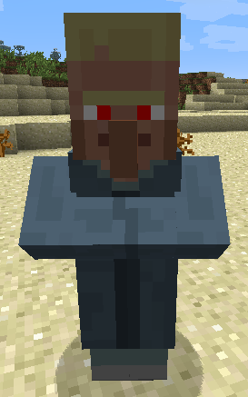

Tok'ra Villagers
The
Tok'ra are of the same species as the Goa'uld, but they have a
completely different culture. They only take willing hosts, and are
generally friendly and helpful. They have an extensive knowledge of
Goa'uld technology, and will be very happy to sell you the crystals you
need to build those elusive stargate components.